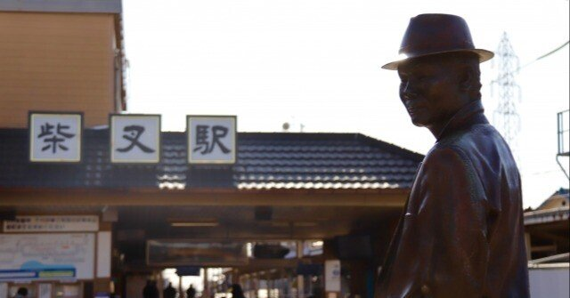

帰省といったら大げさなようにも思えるが、僕の実家は自宅から1時間ほどで帰れる場所にある。
いつだって温かく迎えてくれる両親。学生時代に戻ったような感覚で近況報告なんかしたりして。
僕にとって家族と過ごすひと時は、心の淀みを洗い流してくれる貴重な時間になっている。
そうして迎える夕食時、決まって食卓に流れる映画がある。BSテレ東で再放送されている『男はつらいよ』シリーズだ。
これまで何気なく観ていたが、気づけばそれはかけがえのない作品群になっていた。僕は本シリーズを通して、一辺倒ではない人生の味わい方を見つけることができたのだ。
1969年から1995年の間、おおよそ年2回のペースで上映されてきた『男はつらいよ』。
1996年に主人公の車寅次郎役を務める渥美清が死去しシリーズは終了するものの、視聴者の根強い人気から製作された1997年の特別篇と、2019年に完全新作として上映されたシリーズ50周年記念作『お帰り寅さん』を合わせると、実に50作を数える国民的映画シリーズである。
あらすじはあまりにも有名であるため、ここでは簡単に述べるにとどめたい。
『男はつらいよ』は、日本全国を旅する車寅次郎(通称寅さん)が故郷の葛飾柴又に帰ってきては何かと騒動を起こす人情喜劇。
お調子者の寅さんに、気立てのいい妹のさくらや、その夫の博、2人の息子である満男、そして叔父夫婦が顔を揃える。
そして、ひょんなことからまた旅に出る寅さんを待つのは、各作品を象徴するマドンナだ。
若き頃の吉永小百合、桃井かおり、風吹ジュン、伊藤蘭、檀ふみなど、今でも活躍する名俳優たちが出演している。
しかし、悲しきかな、寅さんの恋路は決まってうまくいかない。
物語の終盤には、恋敗れる寅さんの寂しげな後ろ姿。それでも、やがて天性の明るさで前を向く寅さんに、これまでどれほどの人たちが励まされてきたのだろう。
今でも放送・再放送されている国民的な作品で、大家族が食卓を囲んで談笑したり喧嘩したりするのは、僕には『男はつらいよ』と『サザエさん』くらいしか思い浮かべることができない。
昔はありふれていた家族の原風景。
たった50年前のことなのに、30歳の若輩者からしてみると、やはりその時代を生きていないと実感は湧かないものだと勝手に思い込んでいた。
でも、どうだろう。
帰省するたび家族で観る寅さんを、いつしか遠い親戚のような感覚で観ていることに気がついた。
そんな感覚は決して僕だけのものではないのだろう。
多くの人たちにとって寅さんは身近な伯父であり、仕方のない父親であり、かわいい息子であり、憎めない友人だったのだから、こんなにも長い間愛されてきたのだと思う。
そんな寅さんは時折、作中で観客をハッとさせるようなことを言う。
ドタバタ劇の中にある芯を食った言葉たち。へこたれそうな時や自信をなくした時に勇気をくれるのは、いつだって寅さんの言葉たちなのだ。
「大丈夫、そんな心配するこたぁ、ありませんよ。男の子はね、親父と喧嘩して家を出るくらいでなきゃ一人前とは言えません。私がいい例です」
「思ってるだけで何もしないんじゃな、愛してないのと同じなんだよ。お前の気持ちを相手に通じさせなきゃ。愛してるんなら態度で示せよ」
「自分を醜いと知った人間は、決してもう、醜くねえって」
「あいつも俺と同じ渡り鳥よ。腹空かせてさ、羽根けがしてさ、しばらくこの家で休んだまでのことよ。いずれまた、パッと羽ばたいて、あの青い空へ……な、さくら、そういうことだろう」
寅さんの優しげな声で聴くと、これがまた心の奥深くまで届いて、じんわり温めてくれるのだ。現実に嫌になってばかりな毎日を送っていると、そんな寅さんの言葉たちに自然と目頭が熱くなってしまう。
いつも揉め事ばかり起こして、家族に心配されて、フラフラしている大人なのに、寅さんはどうしようもなく人間くさくて、底知れぬ温もりがあって、めげそうな時に励ましてくれる人生哲学を持っている。
沁み入るという感覚を、僕は寅さんから教えてもらった。
「よお。帰ったぞ」
さくらたちが営む団子屋・くるまやの暖簾をくぐる寅さんの笑った顔が、脳裏に焼きついて離れない。
ああ。書いているうちに、無性に寅さんに会いたくなった。僕も久しぶりに帰ろうかな。
https://www.youtube.com/watch?v=-dL5OHWsW8w